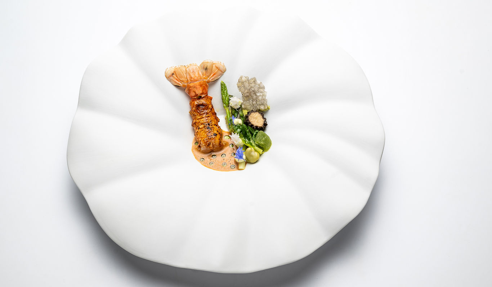
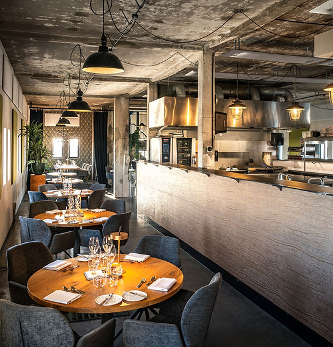
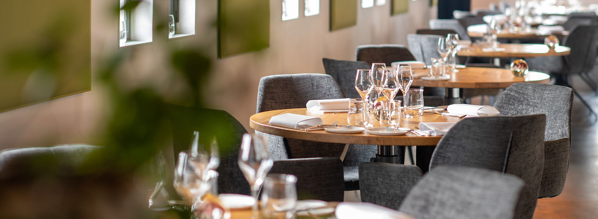
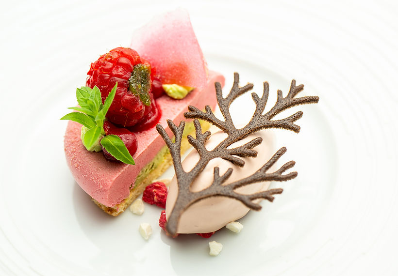
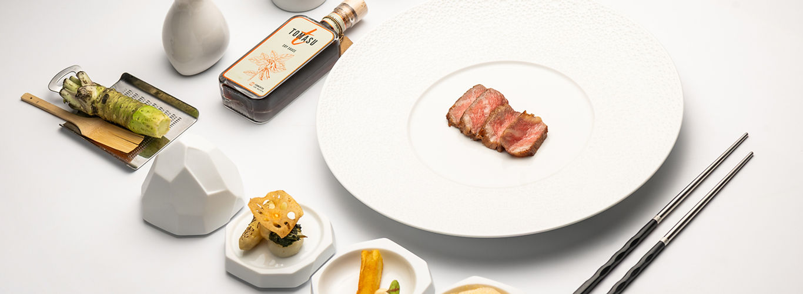
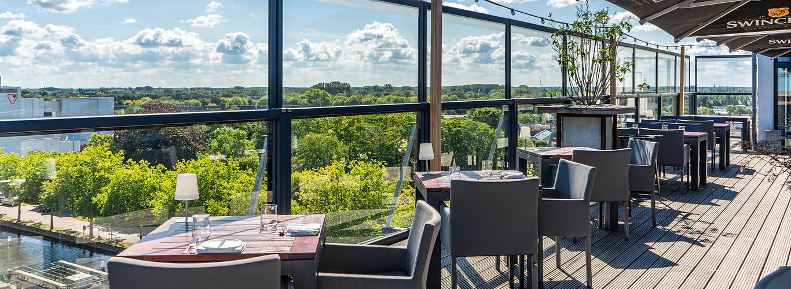
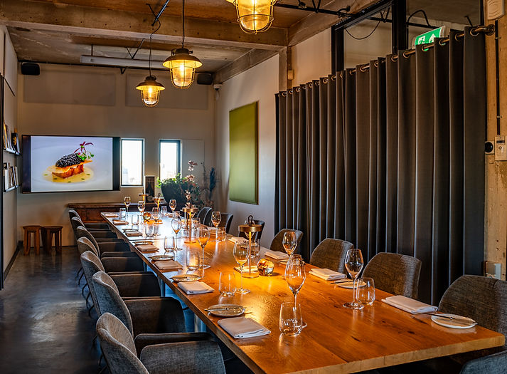

Première
Maak uw film-, theater- of avond- of middaguitje compleet voor een zachte prijs.
Het restaurant van chef Joppe Sprinkhuizen, op de bovenste etage van de monumentale Wiebenga Graansilo in Veghel. Open keuken, dakterras, uitzicht over de regio.

SILLYFOX is het restaurant vol overtuiging. Met respect voor alles wat groeit en leeft. Vanuit het verstand. Vanuit het hart. Eerlijke en verse producten. Van dichtbij, verrijkt met wereldse touch.
SILLYFOX is het restaurant gesitueerd op 32 meter hoogte. Industrieel erfgoed pur sang. Uitkijkend over de regio vanaf het indrukwekkende dakterras. Verwend worden in de weelderige luwte van de open keuken.
SILLYFOX is het restaurant waar chefkok Joppe Sprinkhuizen en het team fine dining garanderen. Dé culinaire totaalervaring. Intens genieten zonder concessies.




Vier de feestdagen bij SILLYFOX en geniet van het culinaire kerstmenu, inclusief de 7 Foxbites in kersteditie. Voor kinderen is er een kindermenu.
Reserveer op tijd en vier kerst bij SILLYFOX. Reserveren
Kerst thuis, zonder stress. Afhalen op kerstavond tussen 15.00 en 17.30 uur, of op tweede kerstdag tussen 14.00 en 16.00 uur.
SILLYBOX bestellenPatron-cuisinier. Vakidioot, perfectionist, non-conformist. Partner van Lidewij en vader van Daamin en Aaren.
SILLYFOX is het restaurant waar op grote hoogte uitersten worden opgezocht. Eenvoud en complexiteit. Pure ingrediënten waaruit de ultieme balans vloeit. Vakmanschap kijkt mee over de schouder van intuïtie. Verrassingen en nieuwe inzichten verrijken onophoudelijk de kaart, het interieur en de beleving van onze gasten.
SILLYFOX is het restaurant zonder vrees. Zonder bitter geen zoet. Zonder destructie geen creatie. Inspiratie is in alles te vinden, ook in de inrichting, waar het funky kleurpalet zich tegen ruw betonnen wanden afzet.
Toen Joppe Sprinkhuizen de mogelijkheid zag zijn eigen restaurant te openen in het voormalige P'rooflokaal, wilde hij het anders doen. Geen tafellinnen, niet meer de ouderwetse etiquette. Geen extreme lange werkdagen. Een fijne werk-privébalans, een relaxte sfeer en high end food.
Sillyfox kwam uit een shortlist van andere namen als winnaar uit de bus: de naam die de tegenstellingen en het experiment helemaal weerspiegelt. Sillyfox is de geuzennaam voor anders kunnen denken en handelen, vol creativiteit en experiment. Onverwacht en verrassend. Bewust buiten de gebaande paden, non-conformistisch zonder zich af te zetten. Sympathiek, eigenzinnig en edgy, met een knipoog.
“De bovenste etage van een voormalige graansilo, ruw en industrieel ingericht, met een designvolle ondertoon, knap dakterras en uitzicht op de regio incluis. Sillyfox is een prachtzaak!”

SILLYFOX is gevestigd op de top-etage van de monumentale Wiebenga Graansilo aan de CHV Noordkade in Veghel, aangemerkt als rijksmonument. De Noordkade is een historische, industriële locatie met monumentale panden uit het begin van de twintigste eeuw.
Het voorste gedeelte van de witte graansilo uit 1915 vormt samen met het achtergedeelte uit 1928 een architectonische eenheid: een functionalistische hoofdvorm met een van oorsprong azuurblauwe dakoverstek en karakteristieke driedelige stalen kozijnen.
Het gebouw is een van de eerste exponenten van het Nieuwe Bouwen, de stijl van de Van Nelle Fabriek in Rotterdam en Société Céramique in Maastricht.
Trouwen in stijl, om nooit meer te vergeten. SILLYFOX is een trouwlocatie met een rijke historie, en u kunt zelfs worden getrouwd op het dakterras.
De locatie is geschikt voor 150 gasten, heeft ruim voldoende parkeergelegenheid en is gemakkelijk bereikbaar. Het CHV-terrein is een prachtige plek voor uw trouwfoto's.
Vraag naar de mogelijkheden
Vergaderen, presenteren en private dining. Besloten, in alle rust en met onze zorg.
Prijzen per persoon, inclusief onbeperkt koffie, thee, water, fruit en sweets. Alleen op reservering. Tijdens lunch of diner gaan de dranken op nacalculatie.
Bedrijfsborrel? Er zijn verschillende opties mogelijk. Mail of bel voor de mogelijkheden.
Cadeaubonnen die u in het restaurant ophaalt, zijn vrij van administratiekosten.
Wil je met ons werken op het hoogst haalbare niveau? Word onderdeel van ons gepassioneerde team.
U kunt 24 uur per dag online reserveren.
Online reserverenSILLYFOX B.V.
Verlengde Noordkade 10-12
5462 EC Veghel
0413 782 182
contact@sillyfox.nl
Parkeer op P1 en volg de bewegwijzering. SILLYFOX ligt op de 4e etage en is bereikbaar met een eigen lift.